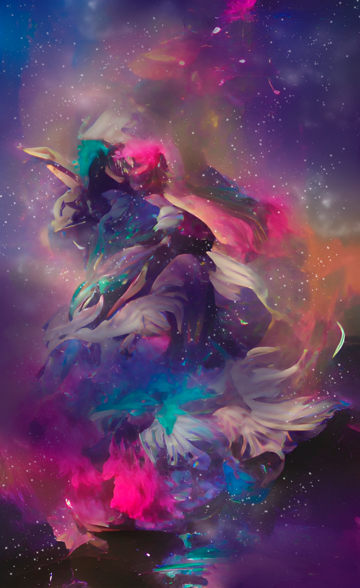
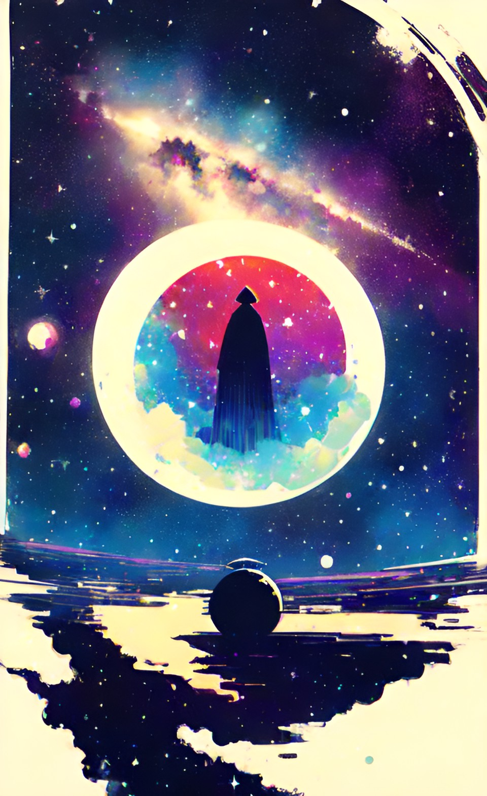
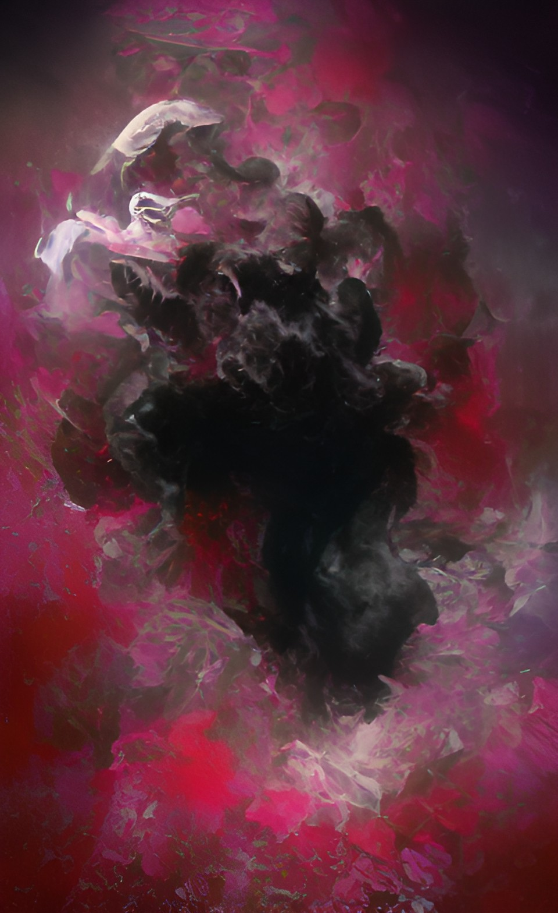
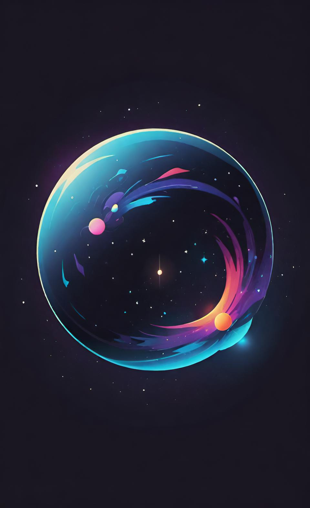

Междумирье - это пространство которое связывает между собой все миры и не только. По своему виду оно очень похоже на вакуум космоса, где миры являются своего рода планетами. Но не одними мирами наполнено Междумирье, помимо них там находятся:
Первородный источник - это облака концетрированной и первородной магической энергии. Таких всего парочка во всём пространстве, но именно благодаря им во вселенной появлются драконы и в разных мирах существет магия. Но добраться до них непросто для простого смертного и даже полу-смертного из-за того, что они находятся очень далеко от миров и дрейфуют по пространству.
Миры богов - это особые миры, которые боги создают лично для себя. В отличие от обычных миров - эти безграничны и по своему желанию туда невозможно попасть. Необходимо, как миниум, позволение этого бога на посещение. Так же эти миры куда больше и более размытые внешне по сравнению с мирами смертных.
Астрал - внешне похожее на Первородные источники облаковидное пространство. Однако внешне оно куда больше и недвижимо. Это главное обиталище духов - неупокоенных душ, что вынуждены сидеть там вечно из-за внутреннего конфликта, что и не даёт разуму покинуть душу и вознестись для перерождения (если это поддерживает их бог)
Мир - место где живут те, кто когда-то были созданы богами. Сами миры тоже создавались богами, сейчас редко кто из новых богов решается на такое, так как это дело весьма долгое и муторное. Все миры в большей или меньшеей степени отличаютя друг от друга и такие вещи как: разумная жизнь, разнообразие ландшавтов и жизни, наличие магии зависит непосредственно от самого бога. Однако в любом случае в мире будет время хочет бог того или нет. Он может лишь повлиять на то как это время будет течь

Драконы - особые магические существа, что рождаются из Первородного источника. Они огромны по своим габаритам, зачастую даже больше богов. Их главная цель перемещаться по основной части Междумирья, где расположены миры и копить в себе магическую энергию. Спустя некоторое время драконы эволюционируют в богов, обретая разум, силу и свою основную форму.
Боги - следующая и последняя(как сейчас считается) ступень развития драконов. Они, по сути, являются живой энергией с разумом, что обеспечивает им бессмертие в любом виде. Как и драконы, они зачастую огромны и обычный мир легко умещается на их руках. Их силы безграничны, но не выходят за рамки их идей и целей.
Рисункии сделаны при помощи нейросетей